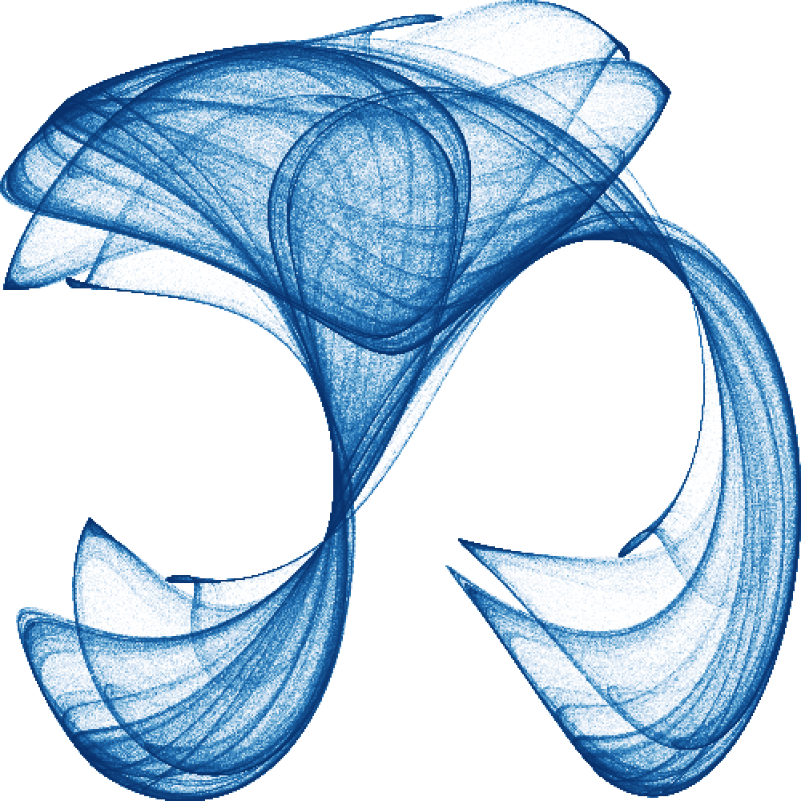
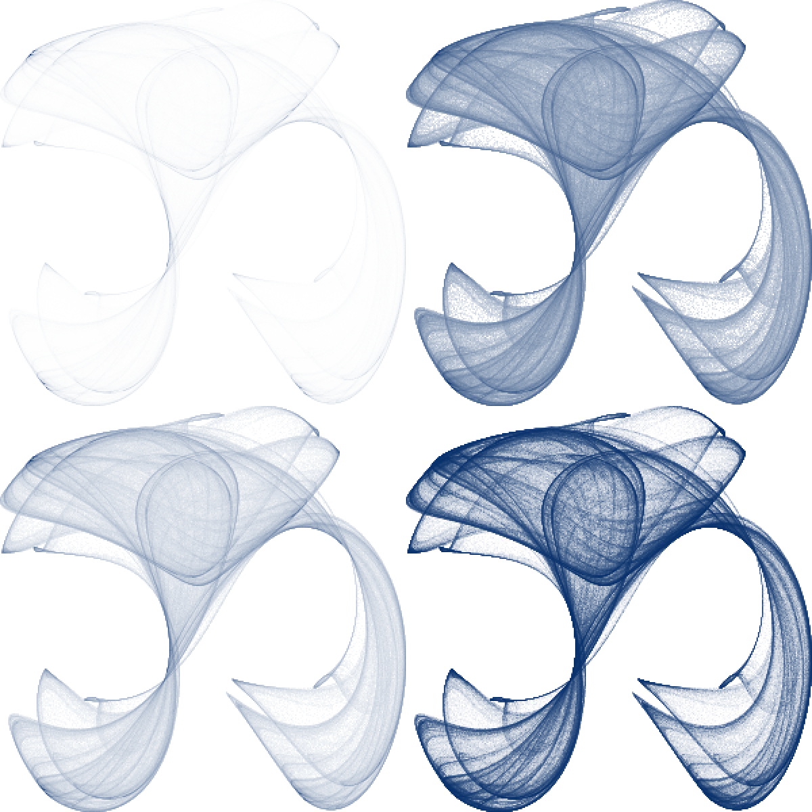
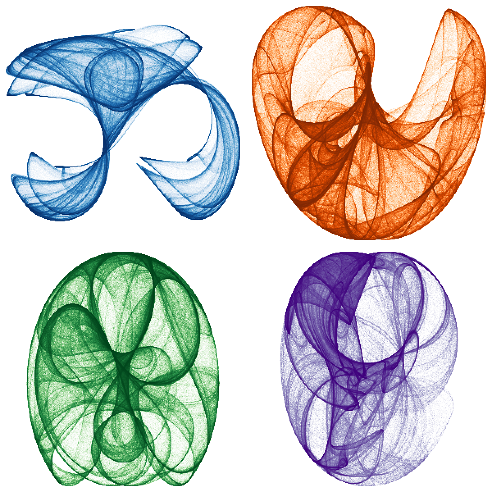

Past a few hundred thousand points, drawing one marker each stops working. Markers pile on top of markers, the file balloons, and a solid blob hides whatever structure the data had. Drawing the markers faster does not fix this, because the picture itself is wrong: overplotting throws away density.
datashade() takes the approach datashader made popular: do not draw
markers at all. Bin the points into a canvas-sized grid in one pass,
count how many land in each cell, and colour each cell by that count.
The cost is decoupled from both the number of points and the amount of
overplotting, and the result is honest about density.
datashade() returns a single raster_grob() you
draw like anything else.
The examples here are strange attractors, the same gallery shipped in
system.file("examples/attractors.R", package = "vellum").
They are a good stress test: a chaotic map iterated for millions of
points, with density spanning many orders of magnitude between the
sparse outer wisps and the bright folded core.
Generating an orbit
An attractor orbit is sequential: each point is a function of the one
before it, so it cannot be vectorised in R. vellum ships a small Rust
kernel for it, rs_attractor(), which returns 10 million
points in a fraction of a second. It is internal (hence the
:::), exposed here only to feed the example; the subject of
this article is what happens after the cloud exists.
n_points <- 2e6
attractor <- function(kind, p, n = n_points, x0 = 0.1, y0 = 0.1) {
n <- as.integer(n)
v <- vellum:::rs_attractor(kind, n, p[1], p[2], p[3], p[4], x0, y0)
list(x = v[seq_len(n)], y = v[n + seq_len(n)])
}
pts <- attractor("clifford", c(-1.4, 1.6, 1.0, 0.7))
length(pts$x)
#> [1] 2000000Shading in one call
Hand the cloud to datashade(). width and
height are the aggregation grid in cells, which is also the
output raster in pixels, and colors is the low-to-high
density ramp. A white first stop lets the sparse regions fade into the
page.
blues <- c("#ffffff", "#c6dbef", "#6baed6", "#2171b5", "#08306b")
vl_scene(5, 5, bg = "white") |>
draw(datashade(
pts$x, pts$y,
width = 500, height = 500,
colors = blues
))
Two million points, and the work scaled with the half-million grid cells, not the points. The same call handles twenty million with no change to the picture’s size on disk: still one 500x500 raster.
Why aggregation wins
The whole cost is one linear pass over the points to bin them, then a
colour lookup per grid cell. Concretely, datashade() calls
an aggregation kernel that is the O(N) heart of the method:
counts <- vellum:::rs_aggregate_2d(
pts$x, pts$y,
NULL, # optional per-point weights
120L, 120L, # grid size
min(pts$x), max(pts$x), min(pts$y), max(pts$y)
)
dim(counts)
#> NULL
range(counts) # the densest cell holds this many points
#> [1] 0 4985
mean(counts > 0) # fraction of the grid the orbit actually touches
#> [1] 0.5379167That count grid is all the downstream cost depends on. Whether it came from two million points or two hundred million, the shading step sees the same 120x120 matrix. Overplotting, the thing that ruins a scatter of markers, is exactly what the count measures here rather than hides.
Mapping density to colour
The densest cell of an attractor can hold thousands of times more
points than a faint outer cell. Map that range linearly and the bright
core saturates while everything faint collapses to nearly the
background. The how argument controls the density-to-colour
mapping; datashader’s default, "eq_hist" (histogram
equalisation), allocates colour by rank so structure stays visible
across the whole range.
ramp <- c("#ffffff", "#08306b")
panel <- function(how) {
datashade(pts$x, pts$y, width = 300, height = 300, colors = ramp, how = how)
}
vl_scene(6, 6, bg = "white") |>
push(viewport(layout = grid_layout(
widths = unit(c(1, 1), "null"),
heights = unit(c(1, 1), "null")
))) |>
push(viewport(row = 1, col = 1)) |> draw(panel("linear")) |> pop() |>
push(viewport(row = 1, col = 2)) |> draw(panel("log")) |> pop() |>
push(viewport(row = 2, col = 1)) |> draw(panel("cbrt")) |> pop() |>
push(viewport(row = 2, col = 2)) |> draw(panel("eq_hist")) |> pop()
Clockwise from top-left: "linear" (only the core
survives), "log", "cbrt", and
"eq_hist" (the fullest picture). "log" and
"cbrt" are useful middle grounds when you want a mapping
with a fixed analytic meaning rather than one that depends on the data’s
rank distribution.
Lining up with data axes
datashade() bins over xlim by
ylim and returns a raster that fills its viewport
(npc 0..1). To place it against data axes,
draw it inside a viewport() whose xscale /
yscale match the same limits, then draw axes, labels, or
reference lines in "native" units in that viewport. For
crisp bins, match width / height to the
viewport’s pixel size and keep the default
interpolate = FALSE.
For the attractors we centre a square window on the orbit so a square cell maps without distortion:
window <- function(x, y, pad = 1.05) {
xr <- range(x)
yr <- range(y)
half <- max(diff(xr), diff(yr)) / 2 * pad
list(
xlim = mean(xr) + c(-half, half),
ylim = mean(yr) + c(-half, half)
)
}
w <- window(pts$x, pts$y)
str(w)
#> List of 2
#> $ xlim: num [1:2] -1.5 2.06
#> $ ylim: num [1:2] -1.67 1.9Passing that window as xlim / ylim keeps
the aspect honest regardless of how the raw orbit range differs between
the two axes.
A gallery
Because each shaded attractor is just a grob, a gallery is a layout
of them. Push a grid_layout() of "null"
(flexible) tracks and drop one datashade() raster into each
cell. Square cells (from the square window above) keep every map
undistorted.
gallery <- list(
list(kind = "clifford", p = c(-1.4, 1.6, 1.0, 0.7),
pal = c("#ffffff", "#c6dbef", "#6baed6", "#2171b5", "#08306b")),
list(kind = "dejong", p = c( 1.4, -2.3, 2.4, -2.1),
pal = c("#ffffff", "#fdd0a2", "#fd8d3c", "#d94801", "#7f2704")),
list(kind = "svensson", p = c( 1.5, -1.8, 1.6, 0.9),
pal = c("#ffffff", "#c7e9c0", "#74c476", "#238b45", "#00441b")),
list(kind = "clifford", p = c(-1.8, -2.0, -0.5, -0.9),
pal = c("#ffffff", "#dadaeb", "#9e9ac8", "#6a51a3", "#3f007d"))
)
ncol <- 2
nrow <- 2
cell_px <- 300
s <- vl_scene(6, 6, dpi = 100, bg = "white") |>
push(viewport(layout = grid_layout(
widths = unit(rep(1, ncol), "null"),
heights = unit(rep(1, nrow), "null")
)))
for (i in seq_along(gallery)) {
a <- gallery[[i]]
orbit <- attractor(a$kind, a$p)
w <- window(orbit$x, orbit$y)
img <- datashade(
orbit$x, orbit$y,
width = cell_px, height = cell_px,
xlim = w$xlim, ylim = w$ylim,
colors = a$pal, how = "eq_hist"
)
row <- (i - 1) %/% ncol + 1
col <- (i - 1) %% ncol + 1
s <- s |> push(viewport(row = row, col = col)) |> draw(img) |> pop()
}
s
The shipped example (inst/examples/attractors.R) goes
further: it draws twelve panels with random parameters, keeping
only orbits that fill a fair fraction of the canvas (rejection sampling,
since most random parameters collapse to a point or diverge), each under
a random colormap. Run it for a fresh gallery every time:
Recap
-
datashade()bins a point cloud into a grid and colours cells by density, so cost tracks the grid size, not the point count, and overplotting becomes signal rather than noise. -
how = "eq_hist"keeps structure visible across orders of magnitude;"log","cbrt", and"linear"are simpler alternatives. - The result is one
raster_grob(). Draw it inside a viewport whose scales matchxlim/ylimto align it with axes, or tile many of them in agrid_layout()for a gallery.
In a grammar
datashade() is the low-level engine: you supply the
coordinates, the limits, and the ramp. A grammar layer on top can wire
all of that up from a plot spec. vellumplot exposes it
as mark_datashade(), which bins straight from a data frame
and fits into a normal plot with scales, guides, and facets. Its datashading
article pushes the same engine to its limit, shading the full US
Census (about 306 million points) two ways. ```